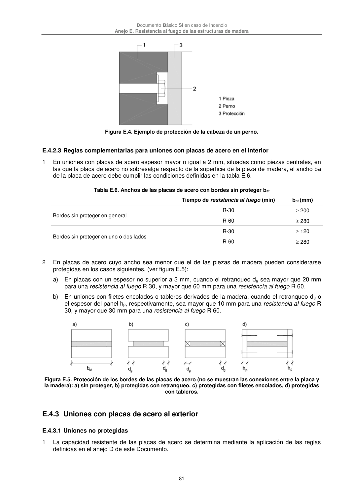

DB-SI · E.4.3.1 Uniones no protegidas · versión 2025-03-04 · capa oficial
Formatos: JSON compacto · Markdown · PDF fuente
Ámbito del documento · texto del ámbito · documento y tablas
ID técnico a0215 · PDF pág. 81 · jerarquía no validada por persona · contrastado con el literal de la página 81 (marcador PDF); no validado por persona · padre: a0212
Documento Básico SI en caso de Incendio Anejo E. Resistencia al fuego de las estructuras de madera 81 Figura E.4. Ejemplo de protección de la cabeza de un perno. E.4.2.3 Reglas complementarias para uniones con placas de acero en el interior 1 En uniones con placas de acero espesor mayor o igual a 2 mm, situadas como piezas centrales, en las que la placa de acero no sobresalga respecto de la superficie de la pieza de madera, el ancho bst de la placa de acero debe cumplir las condiciones definidas en la tabla E.6. Tabla E.6. Anchos de las placas de acero con bordes sin proteger bst Tiempo de resistencia al fuego (min) bst (mm) Bordes sin proteger en general R-30 200 R-60 280 Bordes sin proteger en uno o dos lados R-30 120 R-60 280 2 En placas de acero cuyo ancho sea menor que el de las piezas de madera pueden considerarse protegidas en los casos siguientes, (ver figura E.5): a) En placas con un espesor no superior a 3 mm, cuando el retranqueo dg sea mayor que 20 mm para una resistencia al fuego R 30, y mayor que 60 mm para una resistencia al fuego R 60. b) En uniones con filetes encolados o tableros derivados de la madera, cuando el retranqueo dg o el espesor del panel hp, respectivamente, sea mayor que 10 mm para una resistencia al fuego R 30, y mayor que 30 mm para una resistencia al fuego R 60. Figura E.5. Protección de los bordes de las placas de acero (no se muestran las conexiones entre la placa y la madera): a) sin proteger, b) protegidas con retranqueo, c) protegidas con filetes encolados, d) protegidas con tableros.

PDF fuente redistribuible: copia fiel enlazada en esta página (SHA256 verificado).